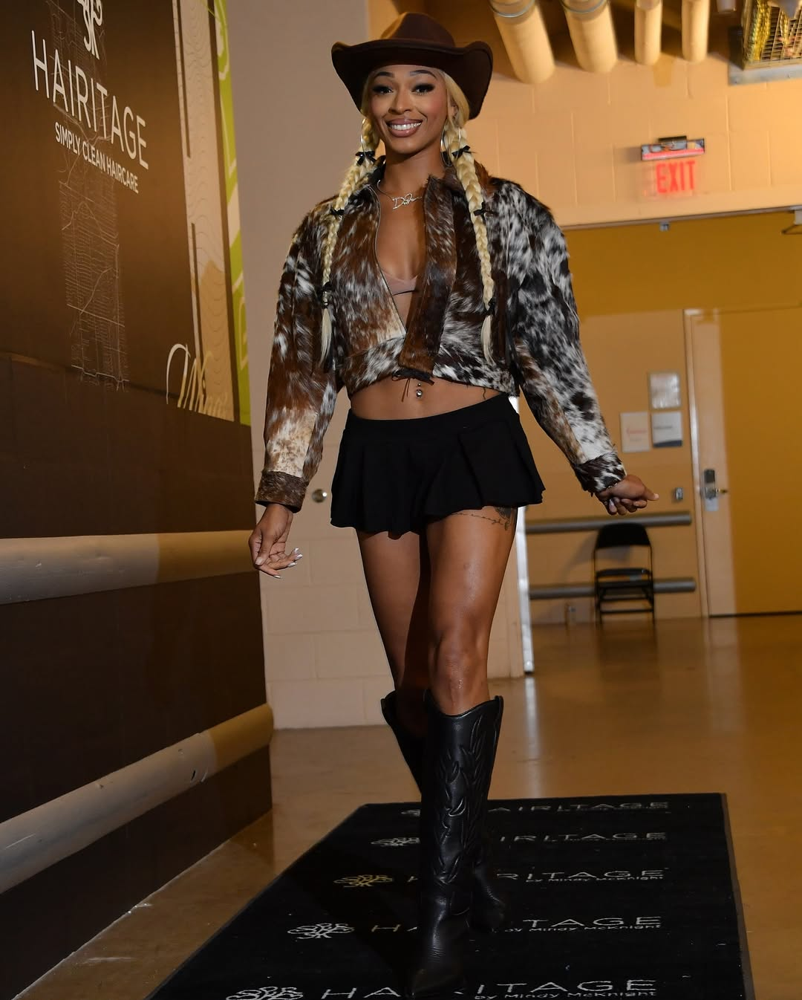

Style Icons of the Court: The League’s Best Tunnel Fits
Kelsey Plum suits up with sharp tailoring and bold accessories.Paige Bueckers keeps it cool with retro denim and sneakers.

DiJonai Carrington brings bold Western flair to the tunnel.Maddy Siegrist mixes sport and style in patchwork suede.Rickea Jackson channels bold Y2K energy.Tyasha Harris pops in vibrant suede and bold tones.Aaliyah Edwards scores in sporty streetwear and bold braids.Satou Sabally owns oversized denim with street flair.